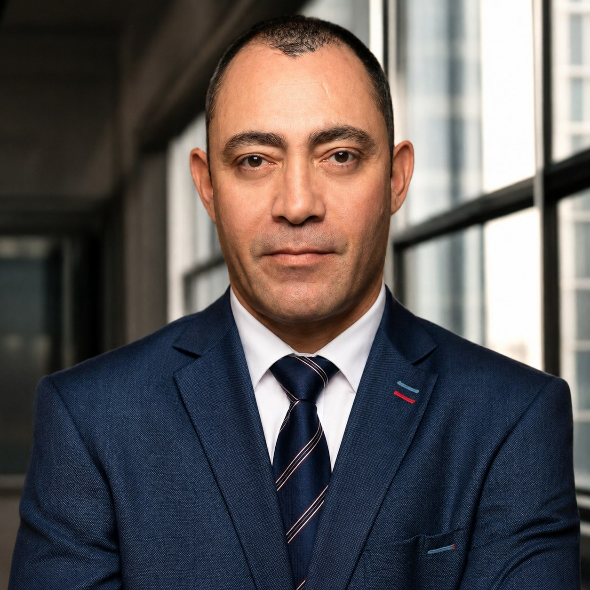

Stammdatenpflege & Master Data
Schulungspraxis in Erfassung, Prüfung und Pflege von Material- und Lieferantenstammdaten.
Logistik- und Operationsmitarbeiter mit Bachelor in Internationalem Handel und Logistikmanagement sowie aktueller SAP-MM-Anwenderzertifizierung und Key-User-Weiterbildung in SAP S/4HANA Material Management. Beruflicher Fokus: SAP-nahe Master Data Administration, Stammdatenpflege, Materialwirtschaft und strukturierte Back-Office-Prozesse.

Ich verbinde praktische Logistikerfahrung mit aktueller SAP-S/4HANA-MM-Weiterbildung und einem klaren Fokus auf Datenqualität, Systempflege und Dokumentenabgleich.
Schulungspraxis in Erfassung, Prüfung und Pflege von Material- und Lieferantenstammdaten.
Kenntnisse in Materialbewegungen, Bestandskontrolle und materialwirtschaftlichen Prozessen.
Erfahrung in Prüfung von Lieferdokumenten, Wareninformationen und Wareneingängen.
Unterstützung bei Material-, Waren- und Informationsflüssen zwischen Logistik, Einkauf und Dokumentation.
Einstiegs- und Aufbauposition im Bereich Master Data Administration / Stammdatenpflege mit SAP-MM-Bezug sowie materialwirtschaftlicher Sachbearbeitung. Fokus auf Material- und Lieferantenstammdaten, Datenqualität, Bestandsinformationen, Wareneingangs- und Dokumentenprozesse.
Sorgfältige und strukturierte Arbeitsweise in Prüfung, Pflege und Kontrolle von Stammdaten, Material- und Bestandsinformationen; sicher in systemgestützter Bearbeitung, Dokumentenabgleich, Excel-/ERP-Datenpflege und Back-Office-Unterstützung.
SAP User Certification Material Management, SAP-Key-User:in MM mit Zusatzqualifikation SD, SAP Fiori und SAP Logon im Schulungssystem.
Grundlagen in Einkauf, Bestandsführung, Rechnungsprüfung, Materialstammdaten und Lieferantenstammdaten.
Excel, Word, digitale Lagerverwaltungssysteme sowie strukturierte Datenpflege und Dokumentenabgleich.
Zertifiziert am 10.04.2026
Zusatzqualifikation SD, 480 UE
240 ECTS, anabin Abschlussklasse A4
Abgeschlossen 2025; Türkisch Muttersprache, Englisch fließend